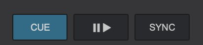

הדגמה אינטראקטיבית
Waveform ונקודת Cue
לחץ על הגל כדי לקפוץ למקום. בעצירה, Cue קובע נקודה חדשה במקום הנוכחי. בזמן ניגון, Cue מחזיר לנקודה ועוצר. לחיצה ארוכה על Cue בעצירה מנגנת רק כל עוד מחזיקים. הדמיה בלי צליל.
Play מפעיל את השיר, ולחיצה נוספת עוצרת אותו (Pause). פשוט.
Cue הוא הכפתור החשוב ביותר של ה-DJ. הוא שומר "נקודת התחלה" בשיר:
- כשהשיר עצור, לחיצה על Cue קובעת את הנקודה במקום שבו אתה עומד.
- לחיצה ממושכת על Cue מנגנת מהנקודה כל עוד אתה מחזיק, וכשאתה עוזב השיר חוזר לנקודה.
- כשהשיר מתנגן, לחיצה על Cue מחזירה אותו לנקודה ועוצרת.
למה זה חשוב?
לפני שמעלים שיר לקהל, ה-DJ שם את ה-Cue בדיוק על הביט הראשון. ככה, כשהוא לוחץ Play, השיר נכנס בדיוק בזמן, בלי שקט או רעש מיותר.
מקלדת (מיפוי ברירת מחדל, מאומת מהמדריך הרשמי)
| פעולה | דק שמאל | דק ימין |
|---|---|---|
| Play/Pause | Alt+1 | Alt+7 |
| Cue | Alt+2 | Alt+8 |
| Stop | Alt+3 | Alt+9 |
ב-Mac מקש Alt הוא Option (⌥). החזקה של Option מציגה על המסך שכבה עם הקיצורים, ולחיצה כפולה עליו משאירה אותה פתוחה.